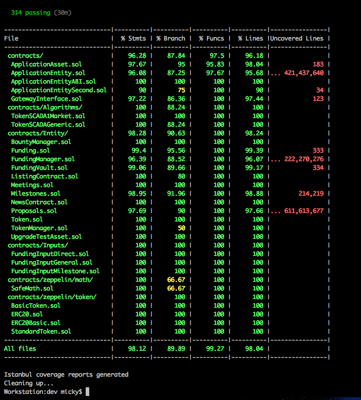

Starting our own testrpc instance at port 8555
Generating coverage environment
Instrumenting ./coverageEnv/contracts/Algorithms/TokenSCADA1Market.sol
Instrumenting ./coverageEnv/contracts/Algorithms/TokenSCADAGeneric.sol
Instrumenting ./coverageEnv/contracts/ApplicationAsset.sol
Instrumenting ./coverageEnv/contracts/ApplicationEntity.sol
Instrumenting ./coverageEnv/contracts/ApplicationEntityABI.sol
Instrumenting ./coverageEnv/contracts/ApplicationEntitySecond.sol
Instrumenting ./coverageEnv/contracts/Entity/BountyManager.sol
Instrumenting ./coverageEnv/contracts/Entity/Funding.sol
Instrumenting ./coverageEnv/contracts/Entity/FundingManager.sol
Instrumenting ./coverageEnv/contracts/Entity/FundingVault.sol
Instrumenting ./coverageEnv/contracts/Entity/ListingContract.sol
Instrumenting ./coverageEnv/contracts/Entity/Meetings.sol
Instrumenting ./coverageEnv/contracts/Entity/Milestones.sol
Instrumenting ./coverageEnv/contracts/Entity/NewsContract.sol
Instrumenting ./coverageEnv/contracts/Entity/Proposals.sol
Instrumenting ./coverageEnv/contracts/Entity/Token.sol
Instrumenting ./coverageEnv/contracts/Entity/TokenManager.sol
Instrumenting ./coverageEnv/contracts/Entity/UpgradeTestAsset.sol
Instrumenting ./coverageEnv/contracts/GatewayInterface.sol
Instrumenting ./coverageEnv/contracts/Inputs/FundingInputDirect.sol
Instrumenting ./coverageEnv/contracts/Inputs/FundingInputGeneral.sol
Instrumenting ./coverageEnv/contracts/Inputs/FundingInputMilestone.sol
Skipping instrumentation of ./coverageEnv/contracts/misc/Migrations.sol
Skipping instrumentation of ./coverageEnv/contracts/zeppelin/math/Math.sol
Instrumenting ./coverageEnv/contracts/zeppelin/math/SafeMath.sol
Instrumenting ./coverageEnv/contracts/zeppelin/token/BasicToken.sol
Instrumenting ./coverageEnv/contracts/zeppelin/token/ERC20.sol
Instrumenting ./coverageEnv/contracts/zeppelin/token/ERC20Basic.sol
Instrumenting ./coverageEnv/contracts/zeppelin/token/StandardToken.sol
Running: node --max-old-space-size=4096 ../node_modules/.bin/truffle test --network coverage
(this can take a few seconds)...
Using network 'coverage'.
Compiling ./contracts/Algorithms/TokenSCADA1Market.sol...
Compiling ./contracts/Algorithms/TokenSCADAGeneric.sol...
Compiling ./contracts/ApplicationAsset.sol...
Compiling ./contracts/ApplicationEntity.sol...
Compiling ./contracts/ApplicationEntityABI.sol...
Compiling ./contracts/ApplicationEntitySecond.sol...
Compiling ./contracts/Entity/BountyManager.sol...
Compiling ./contracts/Entity/Funding.sol...
Compiling ./contracts/Entity/FundingManager.sol...
Compiling ./contracts/Entity/FundingVault.sol...
Compiling ./contracts/Entity/ListingContract.sol...
Compiling ./contracts/Entity/Meetings.sol...
Compiling ./contracts/Entity/Milestones.sol...
Compiling ./contracts/Entity/NewsContract.sol...
Compiling ./contracts/Entity/Proposals.sol...
Compiling ./contracts/Entity/Token.sol...
Compiling ./contracts/Entity/TokenManager.sol...
Compiling ./contracts/Entity/UpgradeTestAsset.sol...
Compiling ./contracts/GatewayInterface.sol...
Compiling ./contracts/Inputs/FundingInputDirect.sol...
Compiling ./contracts/Inputs/FundingInputGeneral.sol...
Compiling ./contracts/Inputs/FundingInputMilestone.sol...
Compiling ./contracts/misc/Migrations.sol...
Compiling ./contracts/zeppelin/math/Math.sol...
Compiling ./contracts/zeppelin/math/SafeMath.sol...
Compiling ./contracts/zeppelin/token/BasicToken.sol...
Compiling ./contracts/zeppelin/token/ERC20.sol...
Compiling ./contracts/zeppelin/token/ERC20Basic.sol...
Compiling ./contracts/zeppelin/token/StandardToken.sol...
Compiling ./test/helpers/ExecutionTarget.sol...
Compiling ./test/helpers/SolidityAccountUtils.sol...
Compiling ./test/mocks/EmptyStub.sol...
Compiling ./test/mocks/GenericCaller.sol...
Compiling ./test/mocks/SafeMathMock.sol...
Compiling ./test/mocks/SampleRecipientSuccess.sol...
Compiling ./test/mocks/SampleRecipientThrow.sol...
Compiling ./test/mocks/TestApplicationAsset.sol...
Compiling ./test/mocks/TestApplicationEntity.sol...
Compiling ./test/mocks/TestApplicationEntityABI.sol...
Compiling ./test/mocks/TestApplicationEntityBad.sol...
Compiling ./test/mocks/TestApplicationEntitySecond.sol...
Compiling ./test/mocks/TestBountyManager.sol...
Compiling ./test/mocks/TestERC20Caller.sol...
Compiling ./test/mocks/TestFunding.sol...
Compiling ./test/mocks/TestFundingInputMock.sol...
Compiling ./test/mocks/TestFundingManager.sol...
Compiling ./test/mocks/TestFundingVault.sol...
Compiling ./test/mocks/TestGatewayInterface.sol...
Compiling ./test/mocks/TestListingContract.sol...
Compiling ./test/mocks/TestMeetings.sol...
Compiling ./test/mocks/TestMilestones.sol...
Compiling ./test/mocks/TestNewsContract.sol...
Compiling ./test/mocks/TestProposals.sol...
Compiling ./test/mocks/TestToken.sol...
Compiling ./test/mocks/TestTokenManager.sol...
Compiling ./test/mocks/TestTokenSCADA1Market.sol...
Compiling ./test/mocks/TestUpgradeTestAsset.sol...
Compilation warnings encountered:
/Volumes/Dev/ico/dev/coverageEnv/contracts/zeppelin/math/Math.sol:9:3: Warning: Function state mutability can be restricted to pure
function max64(uint64 a, uint64 b) internal returns (uint64) {
^
Spanning multiple lines.
,/Volumes/Dev/ico/dev/coverageEnv/contracts/zeppelin/math/Math.sol:13:3: Warning: Function state mutability can be restricted to pure
function min64(uint64 a, uint64 b) internal returns (uint64) {
^
Spanning multiple lines.
,/Volumes/Dev/ico/dev/coverageEnv/contracts/zeppelin/math/Math.sol:17:3: Warning: Function state mutability can be restricted to pure
function max256(uint256 a, uint256 b) internal returns (uint256) {
^
Spanning multiple lines.
,/Volumes/Dev/ico/dev/coverageEnv/contracts/zeppelin/math/Math.sol:21:3: Warning: Function state mutability can be restricted to pure
function min256(uint256 a, uint256 b) internal returns (uint256) {
^
Spanning multiple lines.
,/Volumes/Dev/ico/dev/coverageEnv/test/helpers/SolidityAccountUtils.sol:8:5: Warning: Function state mutability can be restricted to view
function getBalance(address _address) public returns (uint256) {
^
Spanning multiple lines.
----------------------------------------------------------------
Running test collections [28].
----------------------------------------------------------------
Contract: SafeMath
✓ multiplies correctly (96ms)
✓ adds correctly (65ms)
✓ subtracts correctly (48ms)
✓ should throw an error if subtraction result would be negative
✓ should throw an error on addition overflow
✓ should throw an error on multiplication overflow
Contract: ERC20 Token
✓ creation: in contract settings should match constructor parameters (192ms)
✓ creation: should create a correct initial balance for the creator
✓ creation: test correct setting of vanity information (109ms)
✓ creation: should succeed in creating over 2^256 - 1 (max) tokens (90ms)
✓ transfers: ether transfer should be reversed.
✓ transfers: should transfer 10000 to accounts[1] with accounts[0] having 10000 (68ms)
✓ transfers: should fail when trying to transfer total amount +1 to accounts[1] with accounts[0] having total amount (67ms)
✓ transfers: should handle zero-transfers normally (57ms)
✓ transfers: should throw if receiver address is 0x0
✓ transferFrom: should throw if receiver address is 0x0 (50ms)
✓ approvals: msg.sender should approve 100 to accounts[1] (46ms)
✓ approvals: msg.sender approves accounts[1] of 100 & withdraws 20 once. (290ms)
✓ approvals: msg.sender approves accounts[1] of 100 & withdraws 20 twice. (269ms)
✓ approvals: msg.sender approves accounts[1] of 100 & withdraws 50 & 60 (2nd tx should fail) (235ms)
✓ approvals: attempt withdrawal from account with no allowance (should fail) (61ms)
✓ approvals: allow accounts[1] 100 to withdraw from accounts[0]. Withdraw 60 and then approve 0 & attempt transfer. (116ms)
✓ approvals: approve max (2^256 - 1) (44ms)
✓ approvals: msg.sender approves accounts[1] of max (2^256 - 1) & withdraws 20 (177ms)
✓ allowance: should start with zero
✓ allowance: should increase by 50 then decrease by 10 (120ms)
✓ allowance: should be set to zero if decrease value is higher than existing (73ms)
✓ events: should fire Transfer event properly
✓ events: should fire Transfer event normally on a zero transfer
✓ events: should fire Approval event properly
Contract: Gateway Interface
✓ initializes with empty properties
requestCodeUpgrade()
✓ throws if address is empty ( 0x0 )
✓ throws if calling object misses the initialize() method
✓ throws if current Application cannot initialize Assets properly (166ms)
✓ links Application if valid (104ms)
✓ creates "Upgrade Proposal" if a previous Application is already linked (706ms)
approveCodeUpgrade()
✓ throws if sender is not current Application
✓ works if sender is current Application (572ms)
✓ throws if current Application cannot transfer assets to new application (336ms)
✓ throws if current Application cannot initialize new application (551ms)
✓ throws if current Application cannot lock itself after transferring assets (539ms)
misc for extra coverage
✓ getNewsContractAddress returns actual linked NewsContract Asset address
✓ getListingContractAddress returns actual linked ListingContract Asset address
Contract: Application Assets
setInitialOwnerAndName()
✓ works if linking an asset for the first time (89ms)
✓ throws if already owned (70ms)
applyAndLockSettings()
✓ works if called by deployer account and asset is not locked already (100ms)
✓ throws if called before initialization
✓ throws if called when settings are already applied (100ms)
✓ throws if not called by deployer's account (54ms)
getApplicationAssetAddressByName()
✓ works if asset is initialized and owned by an application (96ms)
✓ works if asset has settings and they are applied (150ms)
✓ throws if asset name does not exist in the app's mapping (110ms)
transferToNewOwner()
✓ works if current caller is owner and requested address is not 0x0 (181ms)
✓ throws if called when internal owner address is invalid
✓ throws if owned and called by other address (89ms)
✓ throws if new address is 0x0 (62ms)
Application Bylaws in Application Asset
✓ getAppBylawBytes32 returns correct value set by project settings (60ms)
✓ getAppBylawUint256 returns correct value set by project settings (60ms)
Contract: Application Entity
✓ initializes with empty properties (56ms)
✓ initializes with deployer address properly (141ms)
setBylawBytes32()
✓ sets and returns a bylaw bytes32 if not initialized (165ms)
✓ throws if if application is already initialized (79ms)
getBylawBytes32()
✓ throws if application is not initialized
✓ returns correct value set by setBylawBytes32 if application is initialized (98ms)
setBylawUint256()
✓ sets and returns a bylaw uint256 if not initialized (159ms)
✓ throws if if application is already initialized (77ms)
application bylaws validation
✓ sets and returns all string and uint256 bylaws (1321ms)
getBylawUint256()
✓ throws if application is not initialized
✓ returns correct value set by setBylaw if application is initialized (93ms)
initialize()
✓ throws if called when already initialized (54ms)
✓ throws if called with owner missing ( gateway )
✓ works if owner is set, and it's the one calling (98ms)
initializeAssetsToThisApplication()
✓ throws if not an asset (85ms)
✓ throws if any asset has a 0x0 address (54ms)
✓ throws if caller is not gateway
acceptCodeUpgradeProposal()
✓ throws if caller is not Proposals Asset (126ms)
lock()
✓ throws if sender is not gateway
✓ works if sender is gateway (71ms)
linkToGateway()
✓ throws if called when owner already exists
✓ throws if called when already initialized
✓ will emit EventAppEntityReady on initial linking (97ms)
✓ will emit EventNewProposalCreated if a previous ApplicationEntity is already linked (670ms)
addAsset[AssetName]()
✓ throws if called when already initialized (83ms)
✓ throws if called by any other address than initial deployer (68ms)
✓ linking an asset will emit EventAppEntityInitAsset event (80ms)
✓ linking all assets will emit the same number of EventAppEntityInitAsset events (722ms)
✓ linking an asset, then linking the same asset again, will replace it in mapping (207ms)
Contract: Application Entity Second
initializeNewAssetToThisApplication()
✓ throws if not an asset (108ms)
✓ throws if name does not match the asset (117ms)
✓ throws if caller is not the deployer (75ms)
✓ works if caller is the deployer, and asset was already added (115ms)
Contract: Gateway and Application Integration
✓ initial deployment (95ms)
✓ first linking (171ms)
Application upgrades
✓ first upgrade (628ms)
✓ second upgrade (1297ms)
✓ throws if an upgrade request is received from an account that does not pass validCodeUpgradeInitiator check (194ms)
✓ mock: works if an upgrade request is received and current ApplicationEntity canInitiateCodeUpgrade allows it (460ms)
Contract: TokenManager Asset
addTokenSettingsAndInit()
✓ properly sets up the tokens if initialized (90ms)
✓ properly sets up the Token SCADA (170ms)
getTokenSCADARequiresHardCap()
✓ returns boolean value stored in SCADA Contract (91ms)
Contract: ListingContract Asset
setManagerAddress()
✓ throws if caller is not deployer
✓ works if caller is applicationEntity (66ms)
addItem()
✓ throws if addItem caller is not applicationEntity
✓ works if caller is applicationEntity (126ms)
✓ works if caller is manager address (157ms)
getNewsContractAddress()
✓ throws if the child does not actually exist
✓ throws if the child itemAddress is invalid (112ms)
✓ returns a news contract address if the child is an actual ApplicationEntity (757ms)
delistChild()
✓ throws if called by any address other than Proposals Asset (45ms)
✓ works if called by proposals asset, resulting in a child with status == false (140ms)
Contract: NewsContract Asset
addItem()
✓ throws if called by anyone else but the deployer address
✓ works if called by deployer address (107ms)
addInternalMessage()
✓ throws if called by anyone else but the Application address
✓ works if called by Application address (80ms)
Contract: Funding Vault
✓ initializes with empty properties (115ms)
✓ addPayment throws if not initialized
initialize()
✓ throws if called when already initialized
✓ works if settings are correct and has not been initialized before (216ms)
addPayment()
✓ FUNDING_DIRECT_METHOD - works with correct settings and caller (208ms)
✓ FUNDING_MILESTONE_METHOD - works with correct settings and caller (175ms)
✓ throws if msg.value is missing
✓ throws if payment method does not exist
✓ throws if called by other address than manager (funding contract)
✓ handles multiple payments, irregardless of funding method provided (115ms)
Contract: Bounty Manager
✓ token balance matches bylaws
Before Funding ended
✓ throws if sendBounty is called (79ms)
After Funding ended
✓ throws if sendBounty is called by anyone else but deployer (73ms)
✓ throws if sendBounty amount is higher than remaining value (80ms)
✓ works if sendBounty is called by deployer and value is lower than remaining (74ms)
Contract: Funding Asset
✓ deploys with no Funding Stages
✓ deploys with no multiSigOutputAddress
✓ deploys with no Funding Inputs (129ms)
✓ has Funding Inputs once initialized
addSettings()
✓ throws if called when settings are locked (145ms)
✓ throws if global soft cap is greater than global hard cap
✓ properly sets up the funding settings (115ms)
first funding stage
✓ successfully creates a funding stage with proper settings (92ms)
✓ throws if end time is before or equal to start time
✓ throws if token selling percentage is higher than 100%
SCADA Disallows Record Hard Cap, Requires Globals
✓ throws if soft cap exists
✓ throws if hard cap exists
✓ works if hard cap and soft cap is 0 (94ms)
when at least 1 funding stage already exists
✓ successfully creates the second funding stage with proper settings (95ms)
✓ throws if new funding stage start time overlaps existing stage (41ms)
✓ throws if new funding stage + existing stage sell more than 100% of tokens
funding stages added, asset initialized
✓ has correct Funding Inputs after ApplicationEntity grabs asset ownership and initializes it (54ms)
receivePayment()
✓ throws if called directly in the Funding contract
✓ throws if caller is not funding asset
✓ throws if _payment_method is not allowed (114ms)
canAcceptPayment()
✓ returns false if CurrentEntityState is not IN_PROGRESS
CurrentEntityState is IN_PROGRESS
✓ returns false if ETH value is 0
✓ returns false if ETH value is smaller than minimum entry (414ms)
✓ returns false if any State changes are required (599ms)
Funding State: IN_PROGRESS
Funding Input: All
✓ has correct FundingAssetAddress
✓ throws if msg.value is missing
✓ throws if FundingAssetAddress is not set (73ms)
✓ throws if FundingAsset is not pointing to a Contract (57ms)
Funding Input: Direct
✓ has correct type id = 1
↓ Direct Payment: GAS USAGE: 9039005
✓ accepts payments using fallback () method and stores in valut's direct pool (425ms)
↓ First Direct Payment: GAS USAGE: 9039005
↓ Second Direct Payment: GAS USAGE: 348715
✓ accepts second payment from same investor (710ms)
✓ accepts second payment from same investor using both payment methods ( Direct & Milestone ) (704ms)
Funding Input: Milestone
✓ has correct type id = 2
↓ Milestone Payment: GAS USAGE: 9039018
✓ accepts payments using fallback () method and stores in valut's milestone pool (458ms)
Contract: Funding Asset - States
✓ starts with state as New and requires a change to WAITING if current time is before any funding stage (278ms)
✓ handles ENTITY state change from NEW to WAITING when funding does not start yet (639ms)
✓ starts with state as New and has correct Token Balance once in WAITING state (473ms)
✓ handles ENTITY state change from NEW or WAITING to IN_PROGRESS when funding time start has passed (509ms)
✓ is in IN_PROGRESS, receives payments, pre_ico time passes, should Require change to COOLDOWN (1276ms)
✓ handles ENTITY state change from IN_PROGRESS to COOLDOWN when funding period time start has passed (1279ms)
✓ is in COOLDOWN, ico start time passes, should Require change to IN_PROGRESS (1574ms)
✓ handles ENTITY state change from COOLDOWN to IN_PROGRESS when next funding period time start has passed (1661ms)
✓ is IN_PROGRESS, ico end time passes, should Require change to FUNDING_ENDED (2141ms)
handles ENTITY state change from IN_PROGRESS when last funding period time end has passed
✓ to FAILED when payments did not reach soft cap (2423ms)
✓ to SUCCESSFUL when payments reached soft cap (2343ms)
handles ENTITY state change from IN_PROGRESS when Hard Cap is Reached
✓ to SUCCESSFUL when payments reached hard cap in first funding stage (pre-ico) (3457ms)
✓ to SUCCESSFUL when payments reached hard cap in last funding stage (ico) (3464ms)
FundingManager Tasks
✓ handles ENTITY state change from FAILED to FAILED_FINAL after FundingManager Task Process finished (5886ms)
✓ handles ENTITY state change from SUCCESSFUL to SUCCESSFUL_FINAL after FundingManager Task Process finished (17190ms)
misc for extra coverage
✓ isFundingStageUpdateAllowed returns false if not allowed (561ms)
✓ should run doStateChanges even if no changes are required (314ms)
Contract: FundingManager Asset
✓ receivePayment() throws if caller is not funding asset (51ms)
FundingEndedProcessVaultList()
✓ vaultNum has correct number of payments
✓ throws if Funding State is not "FUNDING_ENDED"
✓ Funding State is "FUNDING_ENDED" (4493ms)
states
✓ starts with state as New and requires a change to WAITING (127ms)
✓ handles ENTITY state change from NEW to WAITING (1568ms)
✓ handles ENTITY state change from NEW or WAITING to FUNDING_FAILED_DONE when funding state is FAILED (9403ms)
✓ setVaultCountPerProcess throws if value is not higher than 0
✓ setVaultCountPerProcess properly sets value (52ms)
Funding ends, has payments, but does not reach Soft Cap
✓ handles ENTITY state change to FUNDING_FAILED_DONE, and processes all vaults (9318ms)
Funding ends, has payments, and Soft Cap is reached
✓ handles ENTITY state change to FUNDING_SUCCESSFUL_DONE, and processes all vaults (8625ms)
Contract: FundingManager Asset
Successful funding - Token distribution
Milestone Payments only
✓ SoftCap reached in pre-ico, 1 payment, 1 payment in pre-ico, 0 payments in ico (9016ms)
✓ SoftCap reached in ico, 1 payment, 1 account, 0 payments in pre-ico, 1 payment in ico (8018ms)
✓ SoftCap reached in pre-ico, 2 payments, 1 account, 1 payment in pre-ico, 1 payment in ico (10766ms)
✓ SoftCap reached in ico, 2 payments, 1 account, 1 payment in pre-ico, 1 payment in ico (10616ms)
✓ SoftCap reached in pre-ico, 2 payments, 2 accounts, 1 payment in pre-ico (account 1), 1 payment in ico (account 2) (10946ms)
✓ SoftCap reached in ico, 2 payments, 2 accounts, 1 payment in pre-ico (account 1), 1 payment in ico (account 2) (11090ms)
Mixed Direct and Milestone Payments
✓ SoftCap reached in pre-ico, 4 payments, 2 accounts, 2 payment in pre-ico (account 1/2), 2 payment in ico (account 1/2) (11669ms)
misc for extra coverage
✓ SCADA - initCacheForVariables() throws if called by other than FundingManager (5785ms)
✓ should run doStateChanges even if no changes are required (2057ms)
✓ SCADA - getTokenFraction() should run 0 if my amount is 0 (5829ms)
✓ SCADA - getUnsoldTokenFraction() should run 0 if my amount is 0 (5840ms)
Contract: Milestones Asset - Settings NOT Locked
✓ starts with state as New and requires a change to WAITING if current time is before development start (272ms)
addRecord()
✓ works if settings are not already locked (65ms)
✓ throws if settings are locked (304ms)
Contract: Milestones Asset - Settings Locked
✓ isRecordUpdateAllowed should return false (282ms)
states
✓ throws if trying to set Meeting time after it was already set. (5681ms)
✓ throws if now is @ expiry time and trying to set Meeting time at expiry time. (3830ms)
✓ handles ENTITY state change from WAITING to WAITING_MEETING_TIME when current time is after development start (4228ms)
✓ handles ENTITY state change from WAITING_MEETING_TIME to DEADLINE_MEETING_TIME_FAILED when current time is after milestone end, and meeting time was not set (5314ms)
✓ handles ENTITY state change from WAITING_MEETING_TIME to DEADLINE_MEETING_TIME_YES when current time is after milestone end, and meeting time was set (5682ms)
✓ handles ENTITY state change from DEADLINE_MEETING_TIME_YES to VOTING_IN_PROGRESS when current time is after meeting time (7671ms)
Contract: Proposals Asset
✓ setVoteCountPerProcess throws if value is not higher than 0
✓ setVoteCountPerProcess properly sets value (55ms)
Contract: Proposals Asset - Settings Locked
✓ Asset deploys and initialises properly
proposal creation
type 1 - IN_DEVELOPMENT_CODE_UPGRADE - Voting Type - Milestone
✓ throws if called by any address other than ApplicationEntity
✓ creates the proposal if called by the current ApplicationEntity (369ms)
type 2 - EMERGENCY_FUND_RELEASE - Voting Type - Milestone
✓ throws if called by any address other than deployer
✓ creates the proposal if called by the current deployer (246ms)
type 3 - MILESTONE_POSTPONING - Voting Type - Milestone
✓ throws if called by any address other than deployer
✓ throws if duration is not higher than min postponing bylaw (48ms)
✓ throws if duration is higher than max postponing bylaw (60ms)
✓ creates the proposal if called by the current deployer with correct duration (321ms)
type 4 - MILESTONE_DEADLINE - Voting Type - Milestone
✓ throws if called by any address other than MilestoneAsset
✓ creates the proposal if called by the current MilestoneAsset (276ms)
type 5 - PROJECT_DELISTING - Voting Type - Tokens
✓ throws if called by an address that does not hold any tokens. ( none in wallet / none in vault ) (40ms)
✓ throws if child application is beyond FUNDING_STARTED state. (1372ms)
✓ creates the proposal if called by a token holder, (tokens locked in vault) (295ms)
✓ creates the proposal if called by a token holder, (tokens locked in vault) (297ms)
✓ creates the proposal if called by a token holder, (tokens in wallet) (300ms)
misc for extra coverage
✓ getRequiredStateChanges()
✓ hasRequiredStateChanges()
✓ process() throws if called by any other than ApplicationEntity
✓ getMyVote()
✓ getProposalState()
✓ getBylawsMilestoneMinPostponing() (66ms)
✓ getBylawsMilestoneMaxPostponing() (63ms)
✓ getVotingPower() for non existent investor (60ms)
Contract: Proposals Asset - Type 1 - IN_DEVELOPMENT_CODE_UPGRADE
✓ current proposal matches IN_DEVELOPMENT_CODE_UPGRADE settings (5066ms)
✓ proposal closes as VOTING_RESULT_YES when time expires and no votes are registered (5998ms)
✓ second application has all assets added, and more. Proposal closes as VOTING_RESULT_YES, state change results in assets getting transferred. (7728ms)
✓ VOTE NO @ Milestone 3 - Proposal processed. Investor uses CashBack, validate balances, can continue with next milestones (85438ms)
Contract: Proposals Asset - Type 2 - EMERGENCY_FUND_RELEASE
✓ current proposal matches EMERGENCY_FUND_RELEASE settings (148ms)
✓ throws if EMERGENCY_FUND_RELEASE proposal was already created once
Proposal Created - Voting Started
✓ throws if trying to vote on a non existing proposal (66ms)
✓ throws if trying to vote on a the proposal while having no stake in it (53ms)
✓ Registers a valid vote if voter has a stake in the proposal, does not close voting if stake is lower than 50% (336ms)
✓ Registers a valid vote if voter has a stake in the proposal, closes voting if stake is higher than 50% (375ms)
✓ first vote NO stake below 50%, second vote YES above 50%, closes as VOTING_RESULT_YES (619ms)
✓ first vote NO stake below 50%, second vote NO above 50%, closes as VOTING_RESULT_NO (382ms)
✓ YES Vote, Annuls and registers a new valid vote if voter already voted, has a stake in the proposal, and proposal is not closed (563ms)
✓ NO Vote, Annuls and registers a new valid vote if voter already voted, has a stake in the proposal, and proposal is not closed (545ms)
✓ While more than 1 proposal is active, properly re-indexes active proposals once one is closed (724ms)
Voting Successful - Processed before voting expiry time
✓ throws if trying to vote on a the proposal that has already been finalised (50ms)
✓ FundingManagerAsset state processed, releases ether to owner, tokens to investors, validates balances (5908ms)
Voting Successful - Voting time expired
✓ FundingManagerAsset state processed, releases ether to owner, tokens to investors, validates balances (7276ms)
Contract: Proposals Asset - Type 3 - MILESTONE_POSTPONING
✓ current proposal matches MILESTONE_POSTPONING settings (147ms)
✓ throws if MILESTONE_POSTPONING proposal was already created once (78ms)
Proposal Created - Voting Started
✓ throws if trying to vote on a non existing proposal (50ms)
✓ throws if trying to vote on a the proposal while having no stake in it (48ms)
✓ Registers a valid vote if voter has a stake in the proposal, does not close voting if stake is lower than 50% (329ms)
✓ Registers a valid vote if voter has a stake in the proposal, closes voting if stake is higher than 50% (355ms)
✓ first vote NO stake below 50%, second vote YES above 50%, closes as VOTING_RESULT_YES (593ms)
✓ first vote NO stake below 50%, second vote NO above 50%, closes as VOTING_RESULT_NO (387ms)
✓ YES Vote, Annuls and registers a new valid vote if voter already voted, has a stake in the proposal, and proposal is not closed (544ms)
✓ NO Vote, Annuls and registers a new valid vote if voter already voted, has a stake in the proposal, and proposal is not closed (516ms)
✓ While more than 1 proposal is active, properly re-indexes active proposals once one is closed (738ms)
Voting Successful - Processed before voting expiry time
✓ throws if trying to vote on a the proposal that has already been finalised (50ms)
✓ MilestoneAsset state processed, record time_end increased (2043ms)
Voting Successful - Voting time expired
✓ MilestoneAsset state processed, record time_end increased (4085ms)
Contract: Proposals Asset - Type 4 - MILESTONE_DEADLINE
✓ current proposal matches MILESTONE_DEADLINE settings (168ms)
✓ throws if MILESTONE_DEADLINE proposal was already created once (53ms)
Proposal Created - Voting Started
✓ throws if trying to vote on a non existing proposal (51ms)
✓ throws if trying to vote on a the proposal while having no stake in it (45ms)
✓ Registers a valid vote if voter has a stake in the proposal (366ms)
✓ YES Vote, Annuls and registers a new valid vote if voter already voted, has a stake in the proposal, and proposal is not closed (543ms)
✓ NO Vote, Annuls and registers a new valid vote if voter already voted, has a stake in the proposal, and proposal is not closed (509ms)
✓ While more than 1 proposal is active, properly re-indexes active proposals once one is closed (13422ms)
Voting Successful - Voting time expired
✓ FundingManagerAsset state processed, releases ether to owner, tokens to investors, validates balances (11064ms)
Contract: Proposals Asset - Type 5 - PROJECT_DELISTING
✓ current proposal matches PROJECT_DELISTING settings (148ms)
✓ throws if PROJECT_DELISTING proposal was already created once (71ms)
Proposal Created - Voting Started
✓ throws if trying to vote on a non existing proposal (55ms)
✓ throws if trying to vote on a the proposal while having no stake in it (38ms)
✓ Registers a valid vote if voter has a stake in the proposal, does not require state changes if stake is lower than 50% (328ms)
✓ Registers multiple votes and requires state changes if stake is higher than 50% (623ms)
✓ Registers multiple YES votes, after processing closes as VOTING_RESULT_YES (2415ms)
✓ Registers multiple NO votes, after processing closes as VOTING_RESULT_NO (2369ms)
✓ Registers multiple MIXED votes ( most YES ), some change vote, after processing closes as VOTING_RESULT_YES (2764ms)
✓ Registers multiple MIXED votes ( most NO ), some change vote, after processing closes as VOTING_RESULT_NO (2698ms)
Voting Successful - Processed before voting expiry time
✓ throws if trying to vote on a the proposal that has already been finalised (2047ms)
✓ ApplicationEntity state processed, ListingContract delists project (2016ms)
Voting Successful - Voting time expired
✓ ApplicationEntity state processed, ListingContract delists project (1800ms)
Contract: Proposals Asset - Type 6 - AFTER_COMPLETE_CODE_UPGRADE
✓ current proposal matches AFTER_COMPLETE_CODE_UPGRADE settings (1417ms)
✓ DEVELOPMENT_COMPLETE, Upgrade to second app, request upgrade to third - Proposal processed. (4226ms)
Contract: Project COMPLETION
✓ Development started, processes all milestones, and after last one sets application into DEVELOPMENT_COMPLETE state, validates balances each step (74517ms)
Contract: CashBack Scenario Testing
Platform Funding Failed - Cashback Type 1 - Funding processed
✓ Funding Vaults allow all investors to CashBack (329ms)
✓ throws if CashBack is requested by other address than vault owner (investor) (113ms)
✓ Requesting CashBack transfers all locked ether back to the investor, validates balances and gas usage (302ms)
Platform Funding Failed - Cashback Type 1 - Funding not processed
✓ Funding Vaults allow all investors to CashBack (749ms)
✓ throws if CashBack is requested by other address than vault owner (investor) (229ms)
✓ Requesting CashBack transfers all locked ether back to the investor, validates balances and gas usage (387ms)
✓ Once processed Funding Vaults do not allow CashBack (6497ms)
✓ If not processed in time, and CashBack is active, throws if trying to process (2538ms)
Platform Funding Successful - Cashback Type 2 - Owner Missing in Action Cashback
✓ Funding Vaults allow all investors to CashBack (2124ms)
✓ MIA @ Milestone 1 - Requesting CashBack transfers all locked ether back to the investor, and locked tokens to platform owner, validates balances and gas usage (2218ms)
✓ MIA @ Milestone 3 - CashBack transfers all locked ether back to the investor, and locked tokens to platform owner, validates balances and gas usage (31250ms)
✓ MIA @ Milestone LAST - CashBack transfers all locked ether back to the investor, and locked tokens to platform owner, validates balances and gas usage (67143ms)
Platform Funding Successful - Cashback Type 3 - Milestone Release
✓ Proposal processed. Funding Vault allows the investor to CashBack if majority voted NO and investor also voted NO (17574ms)
✓ VOTE NO @ Milestone 1 - Proposal processed. Investor uses CashBack, validate balances (2387ms)
✓ VOTE NO @ Milestone 1 - Proposal processed. Investor uses CashBack, validate balances, can continue with next milestones (78356ms)
✓ VOTE NO @ Milestone 3 - Proposal processed. Investor uses CashBack, validate balances, can continue with next milestones (79442ms)
✓ VOTE NO @ Milestone 3 - Proposal processed. Investor does not use CashBack, validate balances, can continue with next milestones (79353ms)
✓ VOTE NO @ Milestone LAST - Proposal processed. Investor uses CashBack, validate balances (67608ms)
✓ All investors VOTE NO and cashback at @ Milestone 3, Milestone releases now require 0 votes, automatically finalise as successful (71005ms)
